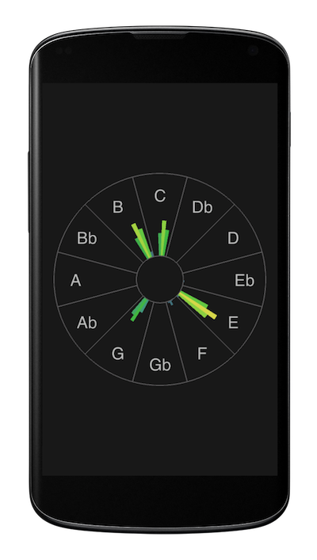

HarmonEye for Android Released

Please meet HarmonEye for Android.
I'm happy to announce the release of this unique mobile app that is able to listen to live music via microphone, analyze it in real-time and show you the tones and chords being played in a visual way. And it's free.
Maybe you have the same problem as me. Imagine an amateur musician who loves music, but neither has perfect pitch, nor has spent years in the music school mastering the technique and the theory.
When I'm learning a new song at home, jamming with friends or with a backing track or just listening to a great soundtrack, I'd like to know several things. The chords, so that I can join with guitar. The melody, so that I can sing or play a solo. And the key, so that I can improvize. Or I'm just curious why the song sounds so strange or beautiful.
Best musicians can pick it by ear and play instantly with the band. Skilled musicians sit down for a while and transcibe it or find a sheet music and pick it from the paper. The rest of us maybe download some lyrics with chords and a tab and try to pick the melody and rhythm from the recording. But not all music is available already in notation. And even then decrypting the lots of note/chord symbols might be time-consuming for the untrained.

So I decided to make an app to help with this and put all my passion and technical expertise into it. I believe in the power of visualization. Most people use their sight all day and have it far more trained than hearing. So I decided to make it visual. It is called HarmonEye, since you can see and understand the harmony in music using your eyes.
HarmonEye is like a tuner on steroids - you can see even multiple tones at once in case a chord is played. There's no staff with symbols just 12 tones in a circle - it's like a piano keyboard rolled into a single octave.
Since it works in real-time you don't have to open a file and wait. You just see what you hear, right now. You can see how tones move in melody or which tones stay and which move in a chord progression. Also you don't need music education to see what's going. Anyone can use it, no matter if you play piano, guitar, saxophone, sing or just listen. With this "perfect pitch" in pocket you can go and explore the world of sound around.
This app is there for you. Free of charge. You can download it for Android and Mac OS X now, other platforms are planned. If you like it tell your friends. Or let me know - you might just say thanks or tell me what's your pain and can be improved. At present, it is already very interesting thing but there is a long way to make it perfect. This is just a beginning. I have a whole bunch of ideas how to make it even better. But I need you. Every single word matters. Thank you.
Enjoy!
Created with love and passion by Bohumir Zamecnik in Czech Republic
Comments
Comments powered by Disqus